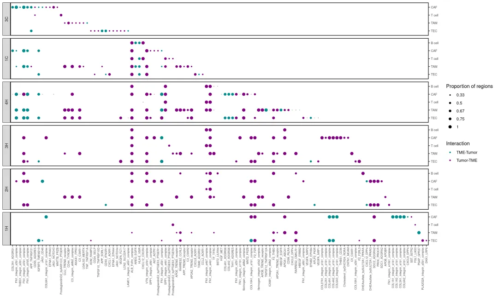

代码复写| 肝癌单细胞分群marker
原文：https://mp.weixin.qq.com/s?__biz=MzAwMzIzOTk5OQ==&mid=2247507136&idx=2&sn=16f8afe29fb59b9a8e9cac265098709c&chksm=9b3ca590ac4b2c86c9554bf20edd587f5d758636f55cf9e390220249d3338b1fde7717fb3c6e#rd 合集：单细胞教程全收录 / 全文复现
评审环节开始！
** 写在前面**
首届“寻因杯”单细胞代码复写大赛正在展开评审环节，这次带来的是09号作品。本作品复写了题为"Multiregional single-cell dissection of tumorand immune cells reveals stable lock-and-keyfeatures in liver cancer"的论文.文章链接 ：https://www.ncbi.nlm.nih.gov/pmc/articles/PMC9729309/
一、复写内容
基础设置
清空环境变量
rm(list = ls())
加载包
library(ktplots)
library(ggpubr)
library(dplyr)
library(patchwork)
library(ComplexHeatmap)
library(vegan)
library(tidyverse)
library(data.table)
library(qs)
library(stringr)
检查cpdb文件
批量运行cpdb，结果输出到output文件夹
# 设置文件路径
output.path = paste0(getwd(),'/output/')
# 以1CB样本为例，检查cpdb结果文件
list.files(output.path,pattern = "1CB")
## [1] "statistical_analysis_deconvoluted_region_1CB.txt"
## [2] "statistical_analysis_means_region_1CB.txt"
## [3] "statistical_analysis_pvalues_region_1CB.txt"
## [4] "statistical_analysis_significant_means_region_1CB.txt"
整合cpdb结果文件
tumor_pattern = "region"
# 从meta文件名提取患者ID
sample.id = str_match(list.files(output.path,pattern = paste0("statistical_analysis_means_",tumor_pattern)), pattern ='\\d\\w+\\b')[,1]
# 批量读取每个患者结果文件
cpdb.res.lsit = lapply(sample.id,function(x){
cpdb.res = list(pvals=read.delim(paste0(output.path,"statistical_analysis_pvalues_",tumor_pattern,"_",x,".txt"),check.names = FALSE),
means=read.delim(paste0(output.path,"statistical_analysis_means_",tumor_pattern,"_",x,".txt"),check.names = FALSE),
decon=read.csv(paste0(output.path, "statistical_analysis_deconvoluted_",tumor_pattern,"_",x,".txt"), sep="\t"),
sig.means=read.delim(paste0(output.path,"statistical_analysis_significant_means_",tumor_pattern,"_",x,".txt"),check.names = FALSE))
return(cpdb.res)
})
names(cpdb.res.lsit) = paste0("_",sample.id)
# 整合数据
for(i in 1:length(cpdb.res.lsit)){
if(i == 1){
mean.list = cpdb.res.lsit[[1]]$"means"
pval.list = cpdb.res.lsit[[1]]$"pvals"
}else{
mean.list = combine_cpdb(mean.list,cpdb.res.lsit[[i]]$"means")
pval.list = combine_cpdb(pval.list,cpdb.res.lsit[[i]]$"pvals")
}
} # 一个是表达水平的矩阵，一个是显著性的矩阵
清洗整合数据
# 数据清洗，只保留肿瘤细胞相关的细胞对
mean.list = mean.list[,c(1:11,grep("Malignant cell_",colnames(mean.list),fixed = T))]
pval.list = pval.list[,c(1:11,grep("Malignant cell_",colnames(pval.list),fixed = T))]
# 去除重复的配受体对
mean.list = mean.list[!duplicated(mean.list$interacting_pair),]
pval.list = pval.list[!duplicated(pval.list$interacting_pair),]
# 设置行名
rownames(mean.list) = mean.list$interacting_pair
rownames(pval.list) = pval.list$interacting_pair
# 修改细胞pair名称
colnames(mean.list) = gsub("[|]","-",colnames(mean.list))
colnames(pval.list) = gsub("[|]","-",colnames(pval.list))
colnames(mean.list) = sub("_(.*?)-","-",colnames(mean.list))
colnames(pval.list) = sub("_(.*?)-","-",colnames(pval.list))
# 去掉肿瘤细胞自身的细胞对
cell.pairs = colnames(mean.list[,-1:-11])
# 互作细胞对数据框
cell.pairs2 = data.frame(cell.pairs=cell.pairs,celltype1=str_match(cell.pairs, "(.*?)-")[,2],celltype2=str_match(cell.pairs, "-(.*?)_")[,2])
# 保留不包含肿瘤自身互作的细胞对
cell.pairs3 = cell.pairs[cell.pairs2$celltype1!=cell.pairs2$celltype2]
# 提取新的矩阵
mean.list = mean.list[,c(colnames(mean.list)[1:11],cell.pairs3)]
pval.list = pval.list[,c(colnames(pval.list)[1:11],cell.pairs3)]
# NA值处理
mean.list[is.na(mean.list)] = 0
pval.list[is.na(pval.list)] = 1
合并mean数据和pval数据
# 宽数据变长数据
mean.df = reshape2::melt(mean.list,id.vars = "interacting_pair",measure.vars = 12:ncol(mean.list),variable.name ="cell_pair",value.name = "mean" )
pval.df = reshape2::melt(pval.list,id.vars = "interacting_pair",measure.vars = 12:ncol(pval.list),variable.name ="cell_pair",value.name = "pval" )
# 基于互作对和细胞对合并两个矩阵
df <- dplyr::left_join(mean.df, pval.df, by = c("interacting_pair","cell_pair"))
head(df)
## interacting_pair cell_pair mean pval
## 1 CDH1_integrin_a2b1_complex B cell-Malignant cell_1CB 0 1
## 2 COL10A1_integrin_a2b1_complex B cell-Malignant cell_1CB 0 1
## 3 COL11A1_integrin_a2b1_complex B cell-Malignant cell_1CB 0 1
## 4 COL11A2_integrin_a2b1_complex B cell-Malignant cell_1CB 0 1
## 5 COL12A1_integrin_a2b1_complex B cell-Malignant cell_1CB 0 1
## 6 COL13A1_integrin_a2b1_complex B cell-Malignant cell_1CB 0 1
根据阈值筛选互作
# 设置阈值
pvalue = 0.01
interaction_level = 0.5
# 筛选
df = df[df$mean>=interaction_level&df$pval<=pvalue,]
添加作图需要的信息
为了寻找特异性互作，我们去除在所有样本都出现的互作
# 将因子向量转为字符串向量
df$cell_pair = as.character(df$cell_pair)
# 从细胞对提取患者id
df$sample = str_match(as.character(df$cell_pair), "_(.*)")[,2] %>% as.factor()
df$sample_id = substr(df$sample,1,2) %>% as.factor()
# 去除在所有患者中出现的互作对
LRI.pair = unique(df$interacting_pair)
all.LRI = sapply(LRI.pair, function(x){
LRI.df = df[df$interacting_pair==x,]
sig.df = LRI.df[LRI.df$pval<=pvalue,]
num.sig = length(LRI.df$pval[LRI.df$pval<=pvalue])
ratio.sample = length(unique(sig.df$sample_id)) / length(unique(df$sample_id))
if(num.sig==0){return("no sig LRI")}
else if(ratio.sample==1){return("all sample sig")}
else{return("sig LRI")}
})
table(all.LRI)
## all.LRI
## all sample sig sig LRI
## 4 112
# 保留没有在所有样本都显著的互作
LRI.pair2 = LRI.pair[all.LRI=="sig LRI"]
df = df[df$interacting_pair %in% LRI.pair2,]
确定细胞互作的方向
# 从患者信息提取肿瘤类型
df$tumor_type = substr(df$sample,2,2)
df$tumor_type = ifelse(df$tumor_type=="C","iCCA","HCC")
df$sample_id = paste0(df$tumor_type,substr(df$sample_id,1,1)) %>% as.factor()
# 从细胞对提取互作方向
df$interaction = ifelse(str_match(df$cell_pair, "-(.*?)_")[,2]=="Malignant cell","TME-Tumor","Tumor-TME")
# 基于细胞对提取发送信号的细胞类型
df$type = apply(df,1,function(x){
cell_pair_type = x[grep("cell_pair",colnames(df))]
interaction_type = x[grep("interaction",colnames(df))]
if(interaction_type=="Tumor-TME"){
type = str_match(cell_pair_type, "-(.*?)_")[,2]
return(type)
}else if(interaction_type=="TME-Tumor"){
type = str_match(cell_pair_type, "(.*?)-")[,2]
return(type)
}else{stop("不能识别细胞类型")}
})
计算每个互作在样本中所有区域出现的比例
# 给每个互作计算在患者区域的比例
df$sample_ratio = apply(df,1,function(x){
# 指定互作
LRI.pair = x[which(colnames(df)=="interacting_pair")]
# 该互作对应的样本
sample.id = x[which(colnames(df)=="sample_id")]
# 所有该互作的数据框
LRI.df = df[df$interacting_pair==LRI.pair,]
# 所有样本的数据框
LRI.all.df = df[df$sample_id==sample.id,]
# 该样本的所有区域数
sampleid.all.num = length(unique(as.character(LRI.all.df$sample)))
# 该互作该样本对应的数据框
LRI.sample.df = LRI.df[LRI.df$sample_id==sample.id,]
# 该互作的所有区域数
sampleid.num = length(unique(as.character(LRI.sample.df$sample)))
return(sampleid.num/sampleid.all.num)
})
重新命名
colnames(df)[which(colnames(df)=="interacting_pair")] = "Var1"
colnames(df)[which(colnames(df)=="cell_pair")] = "Var2"
head(df)
## Var1 Var2 mean pval sample
## 2260 COL3A1_ADGRG1 CAF-Malignant cell_1CB 0.692 0 1CB
## 2319 FN1_integrin_aVb1_complex CAF-Malignant cell_1CB 0.504 0 1CB
## 2798 IGFBP3_TMEM219 CAF-Malignant cell_1CB 0.667 0 1CB
## 5400 ALB_FcRn_complex Malignant cell-B cell_1CB 1.657 0 1CB
## 6504 VTN_integrin_aVb1_complex Malignant cell-CAF_1CB 1.436 0 1CB
## 6541 SPP1_integrin_a9b1_complex Malignant cell-CAF_1CB 0.800 0 1CB
## sample_id tumor_type interaction type sample_ratio
## 2260 iCCA1 iCCA TME-Tumor CAF 0.6666667
## 2319 iCCA1 iCCA TME-Tumor CAF 1.0000000
## 2798 iCCA1 iCCA TME-Tumor CAF 0.6666667
## 5400 iCCA1 iCCA Tumor-TME B cell 1.0000000
## 6504 iCCA1 iCCA Tumor-TME CAF 1.0000000
## 6541 iCCA1 iCCA Tumor-TME CAF 0.3333333
调整互作的顺序，使其在所有患者中整齐分布
# 创建副本
df2 = df
# 提取每个患者
sample.id2 = sort(unique(as.character(df2$sample_id)),decreasing = T)
# 给互作排序
LRI.order=c()
for(j in sample.id2){
# 指定患者
LRI.df = df2[df2$sample_id==j,]
LRI.df = LRI.df[order(LRI.df$type),]
# 指定患者的互作
LRI.pair = LRI.df$Var1 %>% as.character()
# 记录互作顺序
if(grep(j,sample.id2)==1){
LRI.order = LRI.pair
}else{
LRI.order = c(LRI.order,LRI.pair)
}
# 删除已经记录的互作
if(length(LRI.pair)==1){
df2 = df2[-grep(LRI.pair,as.character(df2$Var1)),]
}else if(length(LRI.pair)>=2){
# 多个互作时的互作的位置
LRI.pair = unique(LRI.pair)
LRI.site = sapply(LRI.pair,function(x){
return(which(str_match(x,as.character(df2$Var1)) == x))
}) %>% unlist() %>% as.numeric()
# 去除已记录的互作
df2 = df2[-LRI.site,]
}
}
# 检查个数一不一致
identical(levels(factor(df$Var1)), levels(factor(LRI.order)))
## [1] TRUE
# 指定互作对顺序
df$Var1 = factor(df$Var1,levels = unique(LRI.order))
# 指定细胞类型顺序
df$type = as.factor(df$type)
df$type = factor(df$type , levels = c("TEC","TAM","T cell","CAF","B cell"))
ggplot2作图
# 自定义facet顺序
sample_id.labs = c("3C","1C","4H","3H","2H","1H")
names(sample_id.labs) = c("iCCA3","iCCA1","HCC4","HCC3","HCC2","HCC1")
# ggplot2绘制点图
g <- ggplot(df, aes(x = Var1, y = type, colour = interaction))+
geom_point(aes(size = sample_ratio),pch = 20, na.rm = TRUE) +
theme_bw() +
theme(panel.grid.major = element_blank(),panel.grid.minor = element_blank())+
theme(axis.text.x = element_text(angle = 90,hjust = 1,vjust = 0.5,size = 6) ,
axis.text.y = element_text(size = 7),
axis.title.x = element_blank(),
axis.title.y = element_blank()) +
scale_y_discrete(position = "right")+
scale_x_discrete(position = "bottom")+
labs(colour = "Interaction",size="Proportion of regions")+
scale_size(breaks=c(0.33,0.5,0.67,0.75,1),labels = c(0.33,0.5,0.67,0.75,1),range = c(0,4))+
scale_colour_manual(values = c('TME-Tumor'='#008B8B','Tumor-TME'='#800080'),labels = c("TME-Tumor", "Tumor-TME"))+
facet_grid(rows = vars(sample_id), as.table = F,scales = "free",space = "free_y",
switch = "y",labeller = labeller(sample_id = sample_id.labs))+
theme(strip.background = element_rect(color="black", linewidth=.5, linetype="solid"),
panel.border = element_rect(fill = NA,color = "black",linewidth=1,linetype = "solid"))
g

# 输出保存
ggsave("cpdb.res.pdf",g,width = 15,height = 9)
01
二、测试文件及代码
如果你也想学习本文的代码和思路，我们给大家准备好了测试文件和代码。
链接：https://pan.baidu.com/s/11MiILXT8NoB3CQL3mhqyng?pwd=uu5g
提取码：uu5g
02
三、合作方介绍
本次活动由Biomamba生信基地 组织主办、北京寻因生物科技 有限公司独家冠名、科研者之家、西柚云超算联合赞助，设立总价值约50W 的科研助力基金。 北京寻因生物科技有限公司：
北京寻因生物科技有限公司（简称寻因生物）成立于2018年，秉承“用技术温暖生命，预见未来”的企业愿景，致力于全球单细胞市场标准普世化发展，推动单细胞技术在早筛、临床、药研等应用方向的深耕落地，为全球科学家、技术公司及药企工业等客户提供可信赖的高品质单细胞技术服务及实验室建设解决方案。
科研者之家：
科研者之家（www.home-for-researchers）是目前国内最知名的科研工具箱平台，以“科研不停，神器不止”为理念，自2019年上线以来，多款工具火爆科研界，如AI写作助手、Figdraw在线绘图平台、生信零代码平台、AI润色、DLP一键改写降重、中文版Pubmed、课题思路助手等。截止目前，包括Nature，Advanced Materials等顶级期刊在内，科研者之家相关科研工具被论文引用已超2300次之多。
西柚云超算：
西柚云是一家专注于科研共享计算的云服务基建型公司。于2022年推出独立研发的大禹共享型计算系统，具有实例动态迁移（拒绝传统型共享服务器单节点卡顿）、开箱即用的生信环境、每个用户拥有独立的实例和root权限等特性。
03
四、往期作品回顾
干细胞样CD4+ T细胞与自身免疫性血管炎 结直肠癌免疫图谱中的基因表达程序 MLP模型鉴定免疫细胞发育和瘤内T细胞耗竭的单细胞染色质图谱 T Cell单细胞参考图谱 小鼠纹状体单细胞基因变化图谱 人类肾脏snRNA-seq图谱拟时序分析 CellRank的教程重现 代码复写| 胶质瘤相关巨噬细胞scRNA图谱
04
**本次活动最终解释权归主办方所有!******主办方拥有对作品的编辑、宣发权利!

如何联系我们

 公众号后台消息回复不便，这里给大家留一下领取资料及免费服务器(足够支持你完成硕博生涯的生信环境)的微信号 ，方便各位随时交流、提建议（科研任务繁重，回复不及时请见谅）。此外呼声一直很高的交流群 也建好了，欢迎大家入群讨论：
公众号后台消息回复不便，这里给大家留一下领取资料及免费服务器(足够支持你完成硕博生涯的生信环境)的微信号 ，方便各位随时交流、提建议（科研任务繁重，回复不及时请见谅）。此外呼声一直很高的交流群 也建好了，欢迎大家入群讨论：
大家可以阅读完这几篇之后添加给生信入门初学者的小贴士 如何搜索公众号过往发布内容

 您点的每个赞和在看，我都认真当成了喜欢
您点的每个赞和在看，我都认真当成了喜欢